Lead Web Developer & UI/UX Designer with a BS in Computer Science. Over 4+ years of experience delivering high-converting WordPress & WooCommerce stores, custom React web applications, and intuitive UI/UX design systems. Known for merging pixel-perfect Marvel/Stark-level precision with lightning-fast load speeds, robust SEO, and conversion-centered user flows.
Freelance Lead
2020
|
Present
Lead Web Developer & UI/UX Designer
Delivered 50+ custom WordPress and Elementor Pro websites for global clients across e-commerce, tech, and wellness industries.
Designed full UI design systems and design tokens in Figma, cutting revision cycles by 40%.
Integrated WooCommerce stores with Stripe, PayPal, multi-currency pricing, and automated inventory sync.
Little Calm Company
2023
|
2024
WordPress & WooCommerce Developer
Architected and deployed the Spanish e-commerce portal at littlecalmcompany.es.
Customized Elementor Pro checkout funnels and product archives for maximal conversion rates.
Optimized Google PageSpeed score to 90+ through caching, asset compression, and lazy-loading.
HLXperts
2022
|
2023
Frontend Developer & CMS Lead
Built and maintained the knowledge portal at blog.hlxperts.com using Kadence and Elementor.
Structured custom post types and Advanced Custom Fields (ACF) for high-volume content authors.
Implemented technical SEO with RankMath and Google Search Console, boosting organic reach.
BS Computer Science
2019
|
2023
Software Engineering & Web Systems
Earned Bachelor of Science in Computer Science with focus on software engineering, web technologies, and HCI.
Concurrently worked on commercial web applications and client projects throughout degree tenure.
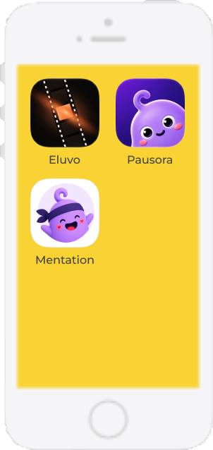
EluvoPausoraMentation
Apps Previews Design & Marketing
Aivory Company Limited
I had a chance to design the App Store preview screenshots for a few apps of Aivory Company Limited, and did marketing works for 1 app that produced significant outcomes (Eluvo).
Click the app icons in the phone to view my projects
Year:
2026
Category:
Photography - Mental Health
Role:
Product Marketing - Product Screenshots Design
Tool & Platform:
Figma - Reddit - Tiktok
Little Calm Company
Full WooCommerce store built for the Spanish wellness market. Custom Elementor design, multilingual SEO, and 60% speed increase.
Sportlingo is a platform owned by Next Play Games Inc. that helps coaches to manage their teams more easily and efficiently. It is recently rebranded into Sportx1. This project is also an assessment that landed me the internship at Next Play Games.
Time:
April 2026
Category:
Sport - Education
Role:
User Interview - UX/UI Research - UI Design
Tool:
Figma
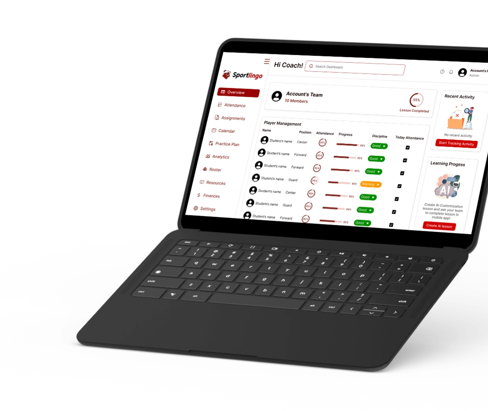
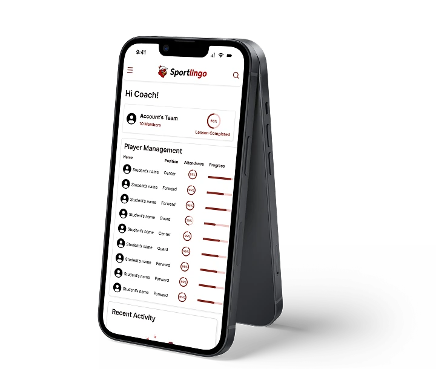
Stage 1: Observation
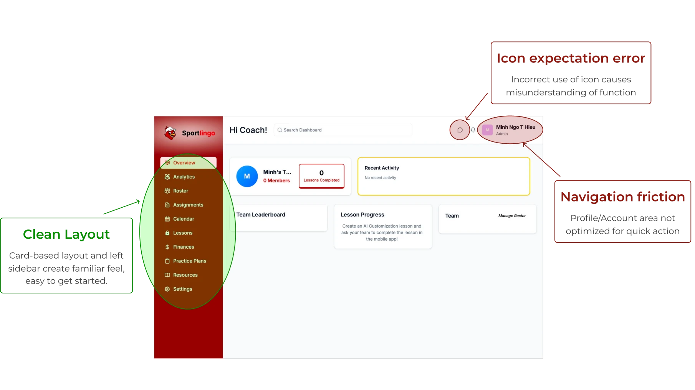
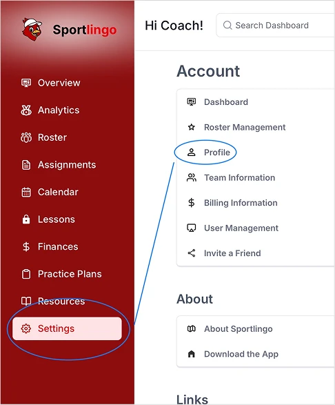
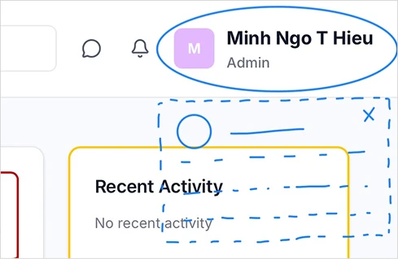
The account section on the top right of the page does not lead to the account page, or any pop-up window. Users have to go to the settings page to access account management, which is also unclear navigation since there is no guiding word like “account” or a profile icon
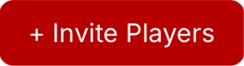
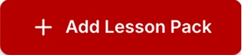
The buttons (which have the same function) are not in the same design (different size, text size, boldness)
Experience: 13 years playing basketball | 3 years coaching basketball
Coaching tools: Google Documents (Sheet, Docs,...)
“”
I need an overview that tells me "how this student is doing" at a glance
“”
It takes me 5–6 days to remember ~20 students’ names. This is the hardest and most time-consuming part
Observation:
The user does not have many difficulties while experiencing the Dashboard. He thinks the information is displayed clearly and he understands all the features presented. There is a little bit of confusion in the Coach/Player IQ feature.
Insights:
Priority of Individual over Team Data: While the dashboard focuses on team-wide stats, the coach's primary need is to see individual student information first, specifically their position, disciplinary commitment, and attendance/absence counts immediately upon logging in
Identity is a Feature: The insight that remembering names is a coach's "hardest" task changes the product's priority from just "tracking data" to "managing people"
Vertical vs. Horizontal Hierarchy: The interview revealed that a list-based format (names on the left, metrics/percentages on the right) is preferred over the current card-based horizontal rows for better data clarity
Pain Points:
The current horizontal card-based layout on the Overview screen (as seen in the sources) is perceived as difficult to scan quickly for data
The overview page needs more features to evaluate players quickly
Attendance is a required task for coaches every day, so it needs to be reached quickly and easily
Recommendations:
Use a list-view or table format where student names are anchored on the left and key metrics (Attendance %, Progress, Discipline) are on the right
Add a Player Management table, remove Manage Roster box
Add a small "Today Attendance" to the player management table on the Overview page where the coach can simply check off names
Rationale:
Coaches need to compare players quickly. A list format is more efficient for scanning 20+ names than horizontal blocks
Coaches would want to see student information first at a glance
Attendance is a daily task currently done in external sheets. Bringing this to the "front door" of the dashboard makes it an "everyday" tool
Stage 3: Redesign
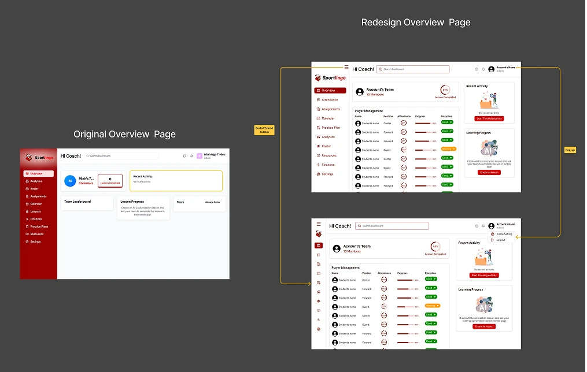
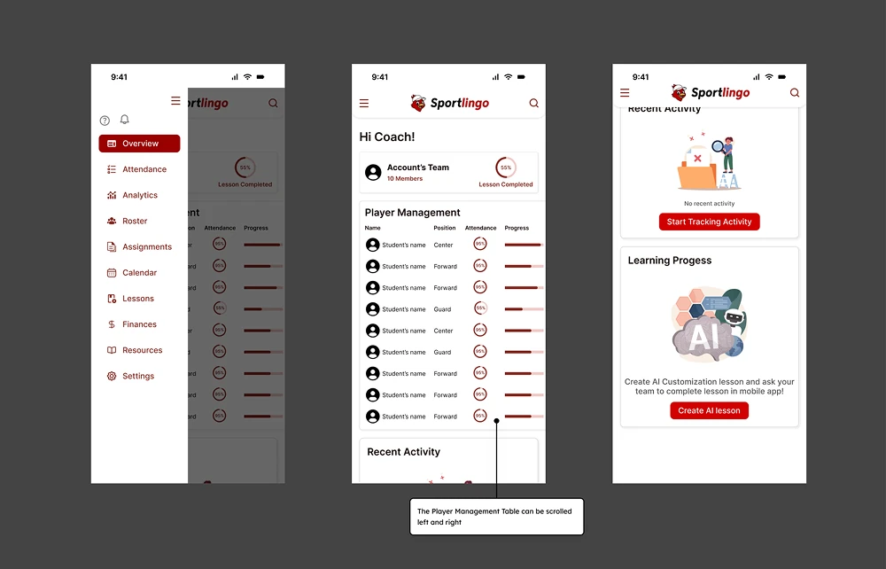
2nd version
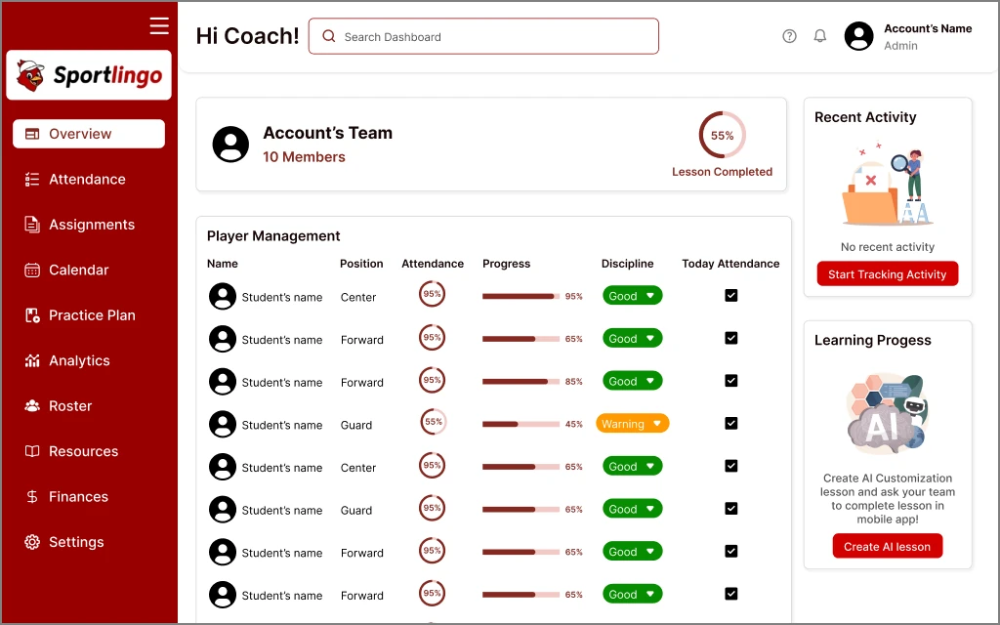
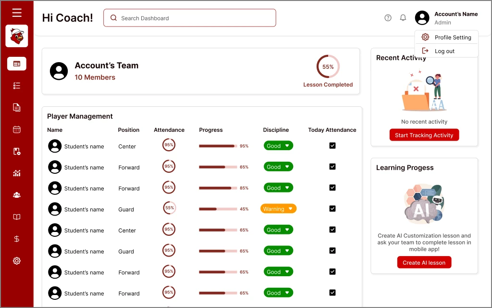
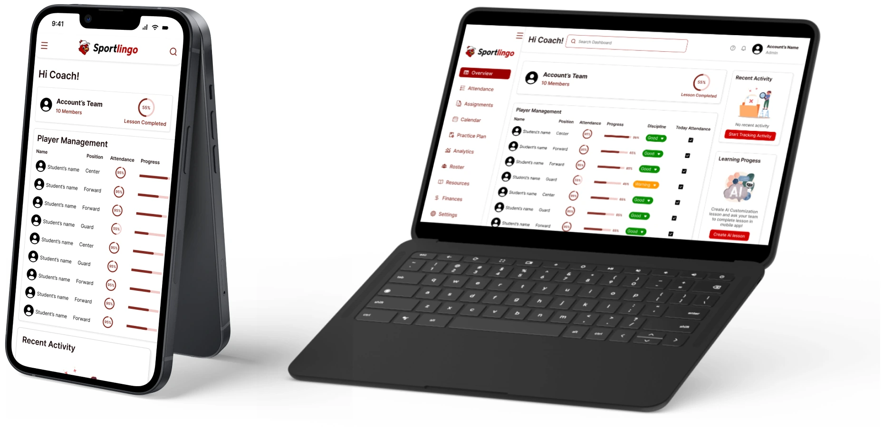
Stage 4: Reflection
What I'd do differently with more time or more interviewees?
Expand User Base: Interview more coaches across a wider range of levels (beginner, professional,...) and more environments (schools, private academies,...) to cross-reference insights
Validate Solution: Conduct direct Usability Testing on the Prototype instead of just evaluating the current static interface
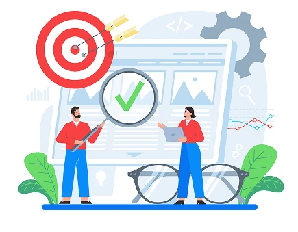
MIMY Photobooth
Personal Project
This is a website I created after meeting some inconvenience when I tried this new trend on social media - the meme photobooth. I thought that maybe I can make something that is cute and allow me to hop on this trend quickly, anywhere, anytime.
In the last 2 years, photobooths have been blowing up, attracting many young people since they provide a fun and interesting experience. Over time, photobooths did not stop at a place to take photos, they developed with better quality and interesting concepts. Posing with the popular memes is one of them.
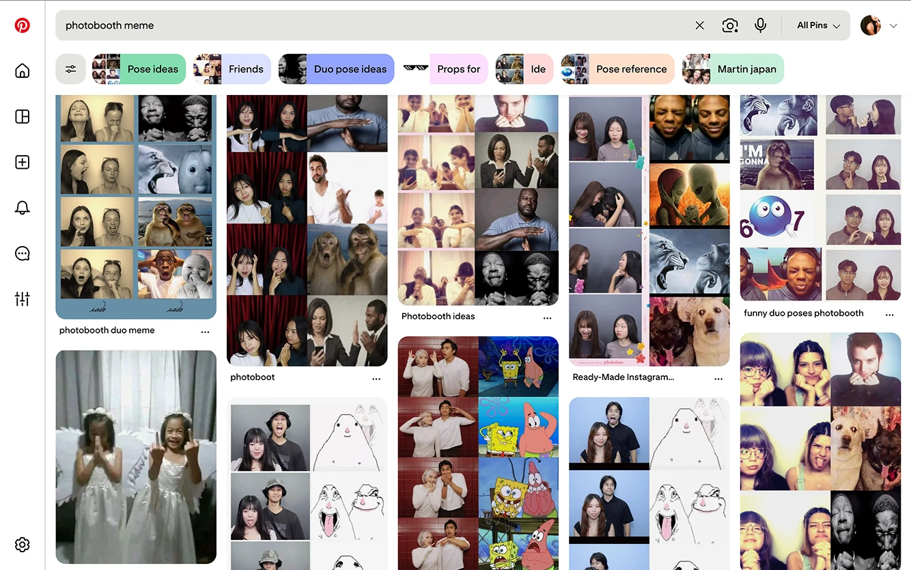
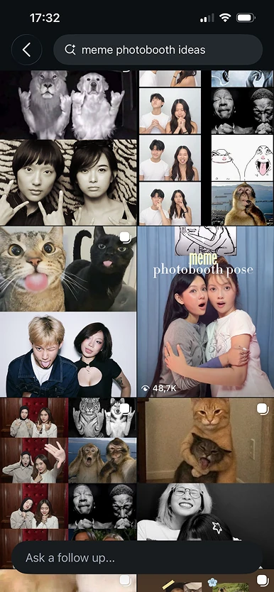
Some photobooths have built-in templates for taking the photos directly. Some people just find the memes somewhere on the internet, and do some editing after getting the photos from the booths.
Stage 1: Problem
During a trip recently, I suddenly had the feeling to do this trend. But I did not want to spend time finding a photobooth, going to it and spending money. So I went on the internet to find the meme I wanted and took photos following that meme. That experience was obviously not like going to a photobooth at all, and it took me a little time to edit the final result.
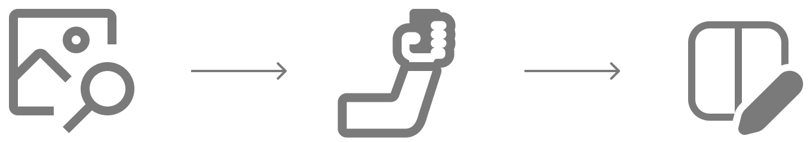
Stage 2: UX/UI Research
To come up with the general idea about how my photobooth website will look like, I went over a few current websites with the same function. I also used my own knowledge from the photobooth experience in the past. Finally, I was able to decide the color tone, typography, elements and the UX flow.
Stage 3: Final Product
I design the UI in Figma, then I use Claude Code to execute the design with code files (html and css).
The website was enjoyed by many of my friends. I am planning to add more features like stickers, camera filters so people can have more fun with it. Furthermore, I can try to promote it on social media very soon
Resipe: Smart Cooking App
Personal Project
Resipe is my personal project, to create a social media application for cooking content. It is an application that allows users to post food recipes, and each post will act like an interactive digital note for people to use and successfully make a dish. Anyone can share any kind of recipe they want, and they can freely explore and choose according to their preference.
Time:
March 2026
Category:
Cooking - Social
Role:
User Research - UI Design
Tool:
Figma
Stage 1: Problem
Many people struggle with cooking after long workdays or lack confidence in preparing meals. Some others just have a love for this activity, they have experience with high quality dishes, want to challenge themselves and want to share those with the world. Existing recipe platforms often function as static recipe libraries. Resipe aims to transform recipes into interactive digital cooking notes that support real-time preparation, personalization, and social sharing.
Stage 2: User Research
Target Users: Primary
Age: 12 - 34 (teenagers - millennials)
Occupation: Busy workers, Students, Chefs
Location: Everywhere
Behaviors: cook at home regularly, seek convenience and time-saving solutions, do a lot of activities on their mobile phones
Secondary:
Age: 24 - 54
Occupation: Workers, Chefs
Location: Everywhere
Behaviors: Cooking enthusiasts, enjoy experimenting, want to document and share personal recipes
As a person who has a big passion for film photography, I took the opportunity to plan and execute the marketing strategies for this film camera simulation app.
Marketing Plan
This is a small startup company, so my plan has to prioritize minimizing the cost as much as possible:
Posting and commenting in suitable communities on different social media platforms (Reddit, X,...) to increase installations.
Launch UGC by micro-influencers who are active on popular platforms like TikTok/Instagram Reels.
Prepare discount and premium codes for interested users and influencers.
Execution
The first plan was the most ineffective plan, since it took time to learn the rules and algorithms and upload posts every day. Meanwhile this could not significantly increase the popularity, installations and revenue. However, getting a few installations, review trades, and direct feedback from people in the field brought its own benefit for the team to improve the app.
UGC is definitely a better approach. With my 6 years of experience in film photography, I can find and reach out to several micro-influencers who have the same hobby. I introduced the app to them and gave them a free lifetime code. When they accepted the invitation, we worked together on the script, reviewing and uploading. The video gained a good amount of engagement (39.4k views, 47 comments, ~4k saved, and ~1.9k shares). Eluvo started to gain a lot of attention and feedback from users after that, and has grown a lot bigger now.
Building and executing a Marketing Plan for a small, new product requires you to have a deep understanding about it. Even better if you love that product. More importantly, you have to be patient, because the process usually takes time and will not gain great results right away. Nowadays, marketing plans which include social media ads, UGC,... should be prioritized since they are usually really effective. However, this is an expensive approach so it is important to choose the right content creators or the plan will fail easily.
I had the opportunity to meet and interview the Executive Director of CANO - a multi-arts organization. They run educational programs, exhibits, and large events such as festivals in Oneonta. She thinks the current brand system is really outdated, and wants a completely new one.
Time:
April 2026
Category:
Art - Non-profit
Role:
Client Interview - Brand System Design
Tool:
Adobe Illustrator - Figma
Client Interview
Questions:
Who is your primary target audience? Describe their age, lifestyle, and what they might value?
If your business was a person, what personality traits would they have?
Are there any colors or styles that you absolutely want to avoid and why?
When the customers read your text, should the voice sound formal, professional, casual/conversational?
What are the top three places people will see your logo? (e.g., Website, Business Cards, Signage).
Insights from answers:
Target audience spans ages and backgrounds. However, they like to be a little bit more inclusive to younger people, but also as diverse and welcoming as possible, since they are also a nonprofit.
Business Personality: slightly eccentric, fun, but also professional.
Dark colors should be avoided, they are looking for something a little bit more vibrant and uplifting. But I need to balance it to prevent the feeling of being too playful and geared towards kids.
They generally prefer a more “bold but loose” font, nothing too formal, however still professional.
They definitely want to keep the “CANO”, but maybe some font to mix it up a bit.
Membit™ is an augmented story-telling platform. When you make a membit, you leave an image, a video, a 3D object, or any combination of the above, in place for other Membit users to find and enjoy. According to the business owner, the current logo does not represent the characteristics of the platform very well. He wants a branding that shows technology, art, and being “everywhere”.
I love art and many things related to it. Since I was small, I have always joined singing, dancing and drawing clubs. Here are some of my favorite pieces: mixed-media artworks, a motion graphic video, CD covers, posters and my film photography.
Mixed-media Artworks
Motion Graphic Video
Make a cup of Matcha Latte, a tutorial illustration video. Here is the final video:
Storyboard
Video outline
Intro (4s)
Prepare tools (6s)
Put matcha powder in the bowl (2s)
Pour a little hot water (3s)
Whisk (4s)
Put ice in the cup (2s)
Pour sweetener (3s)
Pour milk in the cup first, then pour the matcha in (3s)
Outro (5s)
CD Covers
In this class project, we practiced designing 8 CD covers for fake bands/artists with a music genre of our choice and picked out the 2 best. Here are my 2 best covers, followed by my other works in this project.
Posters
Brand Identity & Digital Campaign Design
High-converting visual assets, marketing collateral, and design system components developed for tech startups, e-commerce stores, and digital agencies.
Film Photography
One of my favorite hobbies is taking film photos. This activity gives me such a comfortable and emotional feeling. Dancing is another passion of mine; it has been my hobby since I was a small kid, and I love performing, especially with people who share the same passion.


![Storyboard for the Resipe cooking app. After a full workday, Anh wants to cook a nutritious meal quickly so he can eat healthy and still have time to rest. Step 1: Anh opens Resipe and selects the 30-minute healthy meals category. Step 2: He sorts recipes by calorie count and chooses a high-protein stir-fry recommended by the app. Step 3: The recipe displays estimated cooking time and nutritional information clearly. Step 4: While cooking, Anh follows step-by-step mode with large touch buttons for easy navigation. Step 5: He checks off ingredients and uses the built-in timer for cooking intervals. Step 6: After finishing, he saves the recipe to his weekly meal prep collection.](assets/case/re_story.webp)